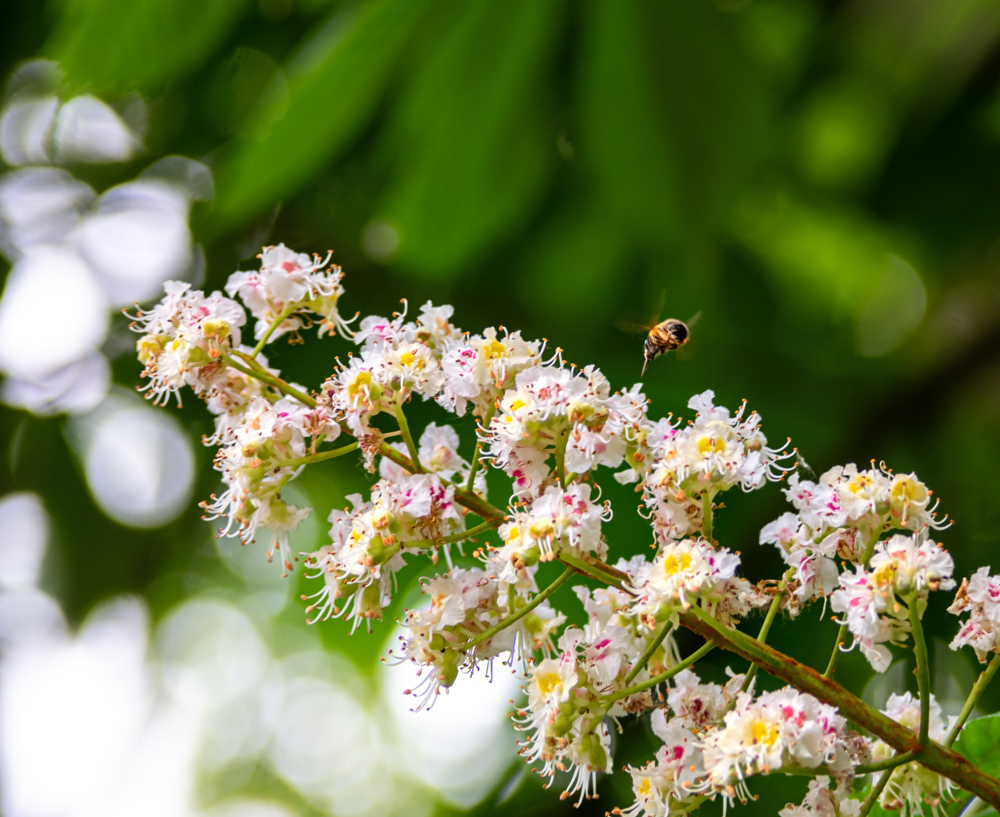
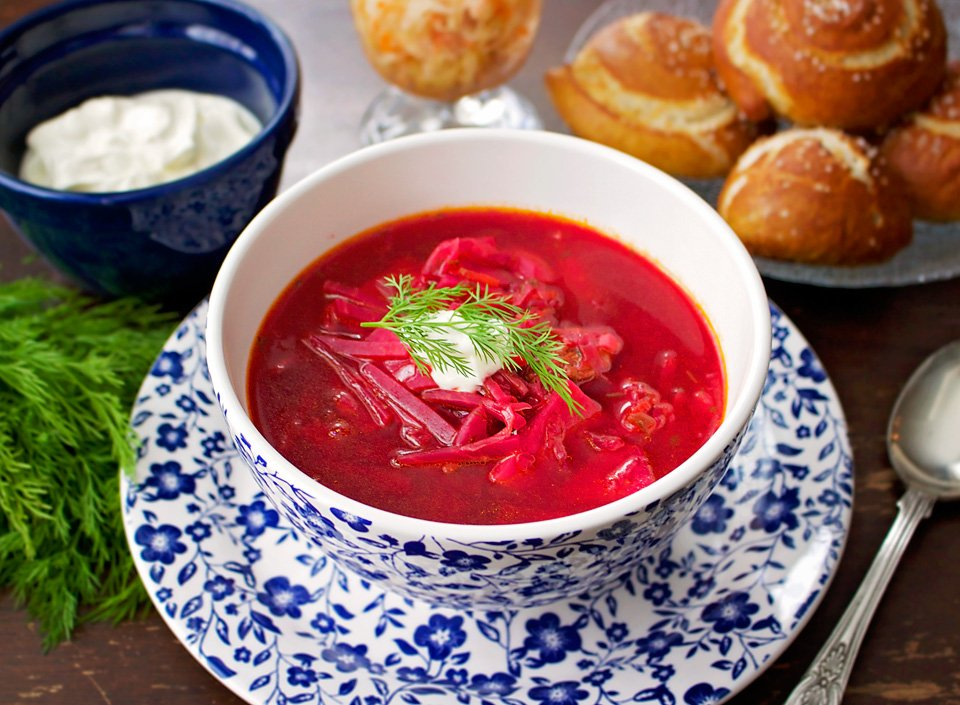
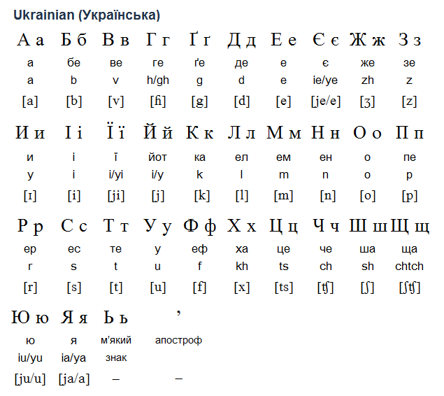

Have you ever heard of Ukraine? If not, that's alright. I am going to give you a quick tour
of this wonderful country right here. I was born in Ukraine, an Eastern European country
that shares it borders with Poland,
Slovakia, and Hungary in the west, Romania and Moldova in the south, Belarus in the north,
and Russia in the east. This country has a rich history dating back to 800 AD, when Kyiv (or
Kiev) was the capital of Kievan Rus. Throughout the centuries, despite the many conquests that
swept through its land and foreign influences, Ukraine always managed to maintain its own
identity and its own language.
Let's go for a visit...

Ukraine enjoys four seasons, and all of them reveal something beautiful about this country.
I grew up in the city of Kiev, the capital of Ukraine. In the spring, it is famous for its
blooming chestnut trees which line up pretty much every major street in Kiev. Here, on the left,
you can see the blooms on the
chestnut trees. Winters can be cold and dark, especially for someone coming from a warm
climate, but I always liked the sound of fresh snow crunching under my feet.
The snow also makes the city of Kiev look almost magical.

No conversation about Ukraine is complete without the mention of food ... Mmmm, the food in
Ukraine, I really miss it... Kiev is probably one of the best places to try out different cuisines.
Compared to Western Europe, culinary explorations is Kiev will be very inexpensive, but very high
quality! And the variety of flavours is unbelievable! But one dish deserves a special mention here.
It's Ukrainian borsch! Never heard of it? Let me explain. It's a thick red soup, or better think of it as
of almost a stew. It has one very important obligatory ingredient, beets! That's what adds red color to
borsch! It is typical to add sour cream to it and eat it with garlic rolls or rye bread.

How do you like your visit to Ukraine so far? Alright, I am not the best tour guide, but I hope you
enjoyed seeing some of the views and tried to imagine what it may look like in real life. If you
ever decide to visit Ukraine, you probably want to learn a few phrases in Ukrainian. You may be
surprised to find out that Ukrainian, unlike Polish, is not using Latin alphabet. In Ukraine, people
use Cyrillics which are quite different from Latin letters. There are quite a few letters that are similar
but many more that are very different. Here is the Ukrainian alphabet on the left. Let me also share a
few phrases in Ukrainian that may come handy if you decide to come for a visit!
English Phrase
Translation in Ukrainian
Transcription (how to say it)
Hi!
Привіт!
(prih vEEt)
How are you?
Як справи?
(yuk sprAh vih)
Good! What about you?
Добре! А як в тебе?
(dOb reh, ah yuk v tEh beh?)
Excuse me!
Перепрошую!
(peh reh prOh shooh you)
Thank you!
Дякую!
(dyAh kooh you)
And finally, a little surprise for you! Do you know that the famous Christmas
carol "Carol of the Bells" is actually a
Ukrainian song? It was written by a Ukrainian
composer Mykola Leontovich in 1914 and is based on a Ukrainian folk chant. If you wish,
you can listen to the performance in Ukrainian here!